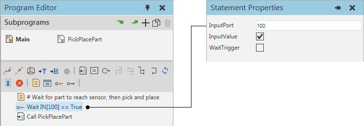

A Wait for Binary Input statement delays the execution of a robot program until the value of a signal mapped to an input port in robot has a specific value. The evaluation of an input port can be cyclic or triggered by a signal event.

| Name | Description |
| InputPort | Defines the input port of robot evaluated by statement. |
| InputValue | Defines if value of InputPort needs to be true or false to complete the statement. |
| WaitTrigger | Defines the evaluation mode for InputPort.
A True value waits for a signal event or trigger, whereas a False value will not wait to check the value of InputPort. Note: A signal event or trigger must occur while the robot is executing the statement, otherwise the robot will miss the event. |